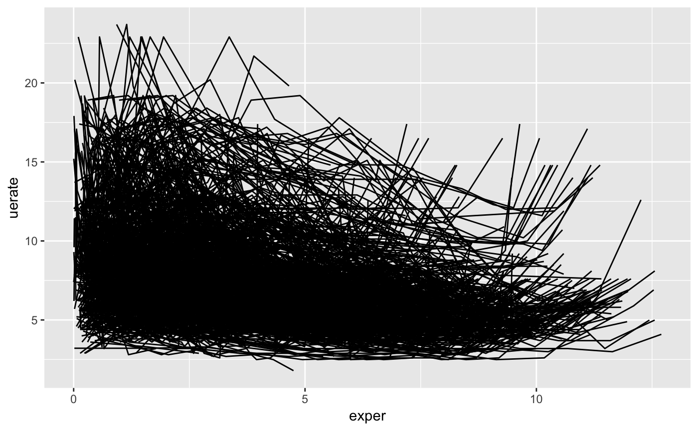
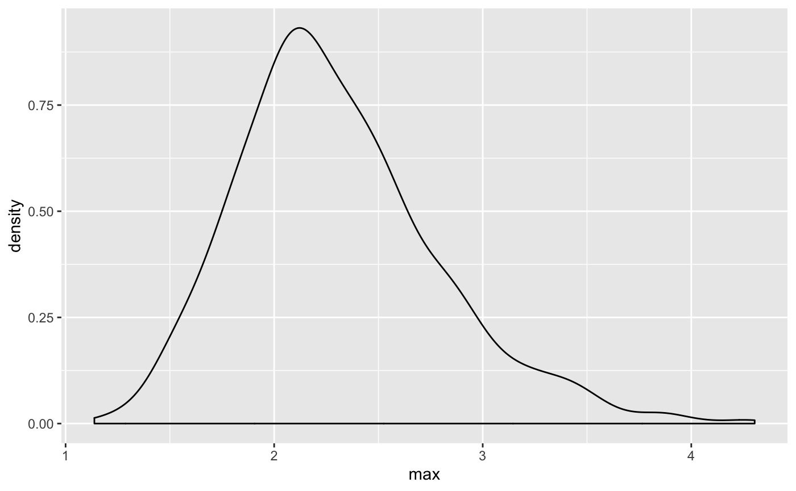
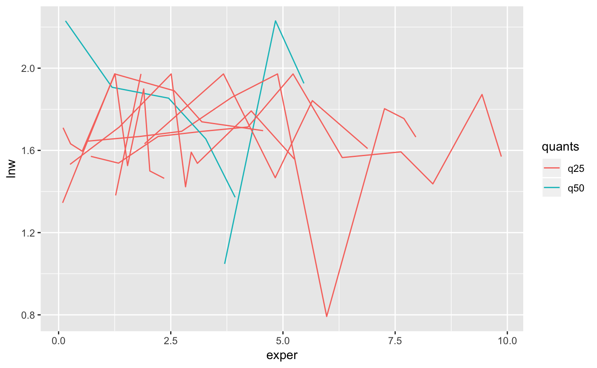
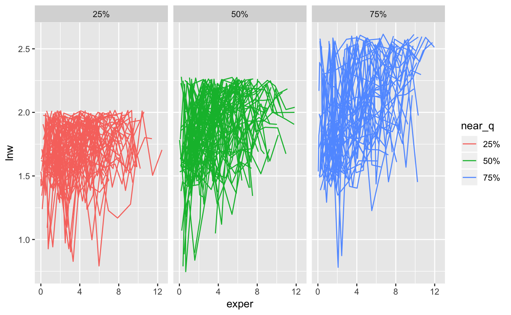

stats_on_stats.RmdTo better understand longitudinal data we can think about some of the exploratory data analysis happening over three datasets:
Let’s expand on this.
We have the full set of data, which we can look at in “full spaghetti” form like so:

So here we have our data
head(wages)
#> # A tibble: 6 x 9
#> id lnw exper ged postexp black hispanic hgc uerate
#> <int> <dbl> <dbl> <int> <dbl> <int> <int> <int> <dbl>
#> 1 31 1.49 0.015 1 0.015 0 1 8 3.21
#> 2 31 1.43 0.715 1 0.715 0 1 8 3.21
#> 3 31 1.47 1.73 1 1.73 0 1 8 3.21
#> 4 31 1.75 2.77 1 2.77 0 1 8 3.3
#> 5 31 1.93 3.93 1 3.93 0 1 8 2.89
#> 6 31 1.71 4.95 1 4.95 0 1 8 2.49
tail(wages)
#> # A tibble: 6 x 9
#> id lnw exper ged postexp black hispanic hgc uerate
#> <int> <dbl> <dbl> <int> <dbl> <int> <int> <int> <dbl>
#> 1 12543 1.09 1.86 0 0 0 0 8 7
#> 2 12543 1.47 3.01 0 0 0 0 8 10.7
#> 3 12543 1.35 3.65 0 0 0 0 8 11
#> 4 12543 1.31 5.02 0 0 0 0 8 8.8
#> 5 12543 1.84 5.68 0 0 0 0 8 7.3
#> 6 12543 1.66 6.7 0 0 0 0 8 7.7Now we can consider the longnostics, just say for example we are only interested in the maximum of lnw:
And from here we can explore the longnostics - what is the distribution of the maximum values?

We can get the summary of these:
summary(l_max_wages$l_max)
#> Min. 1st Qu. Median Mean 3rd Qu. Max.
#> 1.138 1.972 2.230 2.300 2.567 4.304And now we want to identify those individuals who are at, or closest to the quartiles.
library(dplyr)
#>
#> Attaching package: 'dplyr'
#> The following objects are masked from 'package:stats':
#>
#> filter, lag
#> The following objects are masked from 'package:base':
#>
#> intersect, setdiff, setequal, union
l_max_quants <- quantile(x = l_max_wages$l_max,
probs = c(0.25, 0.5, 0.75),
type = 7)
l_max_quant_wages <- l_max_wages %>%
mutate(quants = case_when(
l_max == l_max_quants[1] ~ "q25",
l_max == l_max_quants[2] ~ "q50",
l_max == l_max_quants[3] ~ "q75",
)) %>%
filter(!is.na(quants))And now we can join that data back and look at it:
wages %>%
inner_join(l_max_quant_wages, by = "id") %>%
ggplot(aes(x = exper,
y = lnw,
group = id,
colour = quants)) +
geom_line()
We notice that we don’t see the q75 - this is because we need to add some tolerance around the quantiles so that we can pick up on those values nearby
library(purrr)
library(tidyr)
library(brolgar)
library(glue)
#>
#> Attaching package: 'glue'
#> The following object is masked from 'package:dplyr':
#>
#> collapse
l_max_wages <- l_max(wages, id, lnw)
l_max_quants <- quantile(x = l_max_wages[["l_max"]],
probs = c(0.25, 0.5, 0.75),
type = 7)
part_near <- partial(near,
y = l_max_wages[["l_max"]],
tol = 0.05)
summarise_l_max_wages <- l_max_wages %>%
summarise(id = list(id),
qs = list(as.list(quantile(x = l_max,
probs = c(0.25, 0.5, 0.75),
type = 7)))
)
l_max_wages_near <- summarise_l_max_wages %>%
mutate(is_near = list(map_dfr(flatten(qs), part_near))) %>%
select(id, is_near) %>%
unnest() %>%
gather(key = "near_q",
value = "value",
2:4,
-id) %>%
mutate(quant_is_near = case_when(
value ~ glue::glue("q_{readr::parse_number(near_q)}")
)) %>%
filter(!is.na(quant_is_near))
l_max_wages_near
#> # A tibble: 206 x 4
#> id near_q value quant_is_near
#> <int> <chr> <lgl> <S3: glue>
#> 1 226 25% TRUE q_25
#> 2 234 25% TRUE q_25
#> 3 630 25% TRUE q_25
#> 4 741 25% TRUE q_25
#> 5 767 25% TRUE q_25
#> 6 1211 25% TRUE q_25
#> 7 1536 25% TRUE q_25
#> 8 1679 25% TRUE q_25
#> 9 1822 25% TRUE q_25
#> 10 1823 25% TRUE q_25
#> # … with 196 more rowswages %>%
inner_join(l_max_wages_near, by = "id") %>%
ggplot(aes(x = exper,
y = lnw,
group = id,
colour = near_q)) +
geom_line() +
facet_wrap(~near_q)